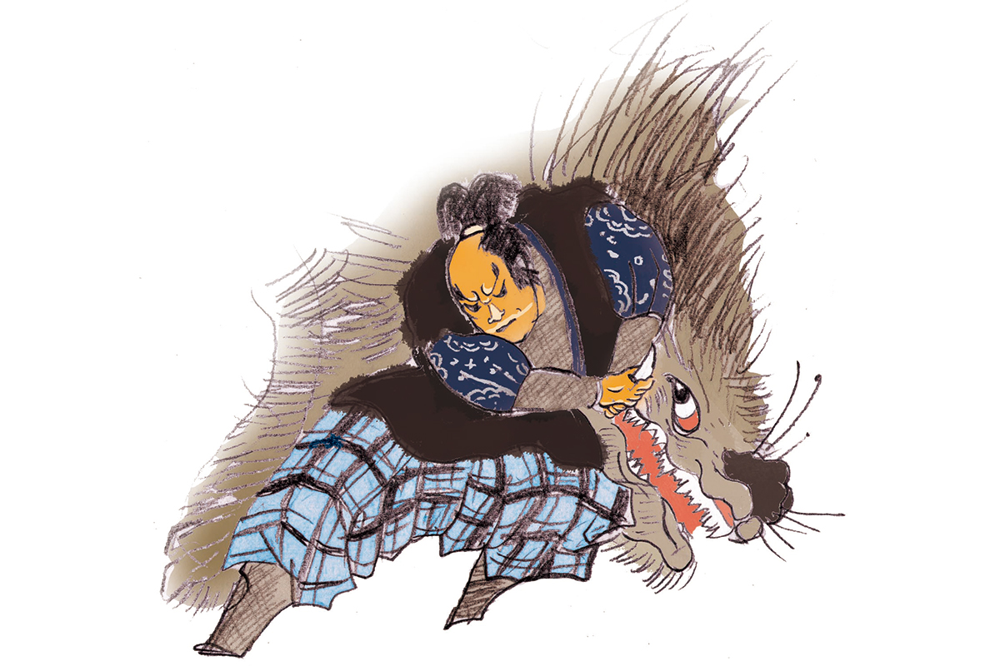
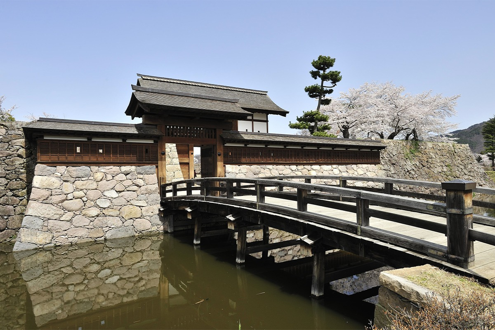

Префектура Нагано · Мацусиро · история
Кансукэ Ямамото: загадочный стратег Сингэна Такэды и его замок в Нагано

Кансукэ Ямамото, советник Сингэна Такэды, строил замки и придумывал хитрые манёвры, а погиб в битве при Каванакадзиме, на земле нынешней префектуры Нагано. Мало кто из полководцев своей эпохи окружён такой тайной.
Эпоха
Век воюющих провинций
С конца XV до конца XVI века Япония жила в непрерывной войне. Сёгунат Муромати окончательно потерял власть, и вместо прежних наместников по всей стране усилились местные военные правители. Этот век японцы называют эпохой Сэнгоку, «эпохой воюющих провинций», и именно от него осталось больше всего полководцев, ставших героями легенд.
Кансукэ Ямамото прожил примерно с 1493 по 1561 год, хотя год его рождения точно не известен. Родился он, по одной из версий, в провинции Микава, на месте нынешнего города Тоёкава в префектуре Айти. Возводил свой род к семьям Ямамото и Обаяси и за жизнь сменил несколько имён: Гэнсукэ Ямамото, Гэнсукэ Обаяси, просто Кансукэ, Кансукэ Ямамото, Харуюки, а под конец взял монашеское имя Доки.

Легенда
Стратег из преданий
Кансукэ известен как военный советник Сингэна Такэды (1521–1573), полководца из провинции Каи, который воевал за земли провинции Синано, нынешней префектуры Нагано. Ямамото причисляют к пяти прославленным вассалам рода Такэда. Но о его жизни, начиная с годов рождения и смерти, так мало надёжных сведений, что его и сегодня считают скорее героем преданий. Впервые он появляется в «Коё гункан», военной хронике рода Такэда, составленной уже в эпоху Эдо.
Образ мудрого стратега полюбился публике. Всю эпоху Эдо Кансукэ рисовали на гравюрах укиё-э, о нём рассказывали мастера устных историй, а в XX веке писатель Ясуси Иноуэ (1907–1991) сделал его героем романа «Фуринкадзан». Благодаря этой книге его имя знают в Японии до сих пор.
Внешность у легендарного стратега была далеко не геройская. Его описывают смуглым, некрасивым, с плохо действовавшими руками и ногами. На службу к Сингэну он поступил уже немолодым, по одной из версий в 45 лет, и проявил себя знатоком военного дела и строительства крепостей.
Жизнь
От безвестного ронина до строителя замков
В 1535 году Кансукэ хотел поступить на службу к Ёсимото Имагаве (1519–1560), правителю провинции Суруга, но получил отказ. Девять лет он оставался в Суруге ронином, самураем без господина, и провёл эти годы в унынии. Лишь в 1543 году его приняли в дом Такэда.
Дальше события пошли быстро. В 1544 году войска Такэды вторглись в Синано, нынешнюю префектуру Нагано, и подчинили район Сува. В 1548 году они дали решающий бой Ёсикиё Мураками (1501–1573), местному правителю Синано. В 1550 году Такэда осадил его замок Тоиси. Крепость держалась стойко, армия Такэды дрогнула и начала отступать, но именно распоряжения Кансукэ помогли разбить отряды Мураками.
В 1551 году Сингэн принял постриг, и Кансукэ последовал его примеру. А в 1553 году по приказу господина он построил замок Кайдзу, позже названный Мацусиро, чтобы встретить угрозу с севера: там набирал силу Кэнсин Уэсуги (1530–1578), правитель провинции Этиго и самый известный противник Такэды.
Битва
Тактика дятла
Такэда и Уэсуги несколько раз сходились на равнине Каванакадзима, на севере Синано. Для четвёртой, самой знаменитой битвы в 1561 году Кансукэ придумал план внезапного удара, который назвали «тактикой дятла». Войско делилось на две части: одна на рассвете нападала на лагерь Уэсуги на горе, а когда испуганные враги сбегали вниз, их встречала вторая. Так дятел стучит клювом по дереву, и насекомые, выскочившие от испуга, попадают ему в клюв.
В той битве, четвёртой при Каванакадзиме, Кансукэ Ямамото погиб. Его могила находится в городе Нагано, на берегу реки Тикума.
Где увидеть
Замок Мацусиро
Замок, который Кансукэ строил по приказу Сингэна, находился в районе Мацусиро города Нагано. От крепости остались место главной цитадели и рвы, их восстановили, и сегодня по ним можно пройти, представляя, как замок готовился к войне с Уэсуги.

Замок Мацусиро (Кайдзу)
- Адрес
- префектура Нагано, Нагано, Мацусиро-мати Мацусиро, 4-1 (адрес музея сокровищ рода Санада, где дают справки о замке)
- Телефон
- +81 26-278-2801